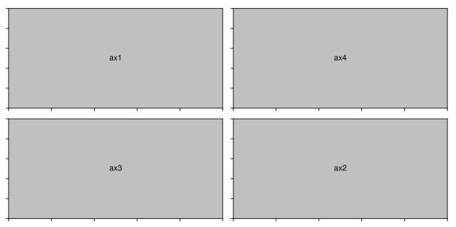
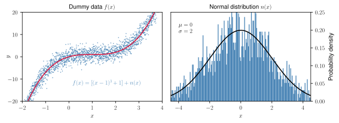
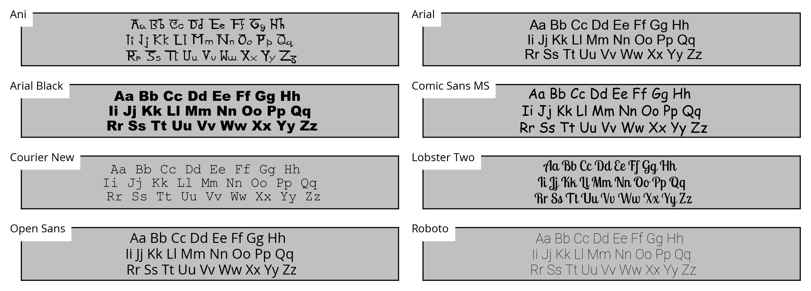
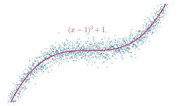

grade
grade
PLOT LIKE A PRO
In this series you will learn how to create animations with Python starting with an overview about plotting in general. If you take only one idea out of this tutorial, let it be this:
DO NOT TRUST THE DEFAULT! - CUSTOMIZE EVERYTHING!
Hence this tutorial and all the following are not oriented towards students just starting out and searching for coding advice or directions in how to set up their environment. - If however you already have some experience coding and using Python, and you want to start visualizing your data or simulation without moving to another tool, and do so properly, this is the guide you have been searching for.

Why choose Python with Matplotlib?
There are many great tools to create interactive visualizations and animations for science most notably Mathematica and Matlab. Many academics in STEM use them, but there is no discussion that if you want to create beautifull, solid and creative visualizations that are to be published, Matplotlib is the way to go.
It offers the precision other tools lack and creates clean plots without aliasing, correct vectorizations and formatting no matter what backend. There is nothing you can't access and thus you can customize anything you desire. Every single plot object like figures and axes or even individual ticks, lines, labels or points can be changed to fit your needs.
All of that can be done with Python which is the most popular programming language in STEM research mostly because it's very high level and therefore very easy to use especially for bigger projects. It offers a wide range of other modules besides Matplotlib that can be imported to extend it's functionality and the community is working relentlessly to enable anyone to do anything with Python. You want to create and test new algorithms and design circuits for quantum computing? You want to prototype custom machine learning models as fast as possible? Analyze big data? Run with Python.
Both are completely free for everyone.

How do I work through this?
I encourage you to create a Jupyter notebook for this particular tutorial so that you can play around with the given codesnippets and examples, but later on, when we start animating, it will be best to work with a simple editor and the terminal.
Please install Numpy aswell if you dared not to do until now despite it being the fundamental Python package for scientific computing. Do not use Pylab all the much if at all, please.
The Matplotlib API
Most tutorials are very focused on very rudimentary aspects of this library or only show you a very special example. Let's do things differently and get at least some overview so that we can actually form the general understanding we need to truly be able to grow our plotting powers.
With Matplotlib you have access to 56 submodules.
You might find this a bit overwelming at first, but the module is carefully desgined to be very object oriented and the naming conventions are mostly quite intuitive as you will realize soon. In fact, you won't even really have to understand anything at first, because you can simply load matplotlib.pyplot for a command line approach which makes it very easy to get the basics done quickly. (Sadly Matplotlib's biggest issue is it's API. This is mostly because it is heavily influenced by Matlab.) These two aspects, the pyplot and the object oriented approach are the most common ways of using this vast library.
Matplotlib's objects form the core of the library. To understand them is absolutely necessary for the control and customization we desire.
Figures & Subplots
The Figure.
Axes.
Subplots. As you can see, we have defined two primitives. The figure and axes which are places inside the figure forming subplots. The more basic but complicated approach would be to do define them independently and then add them together which allows for the creation of overlapping subplots like this:
fig = plt.figure(figsize=(4.5,4.5), dpi=200)
ax1 = plt.Axes(fig=fig, rect=[0.75, 0.75, 0.5, 0.5], facecolor='crimson')
ax2 = plt.Axes(fig=fig, rect=[0, 0, 1, 1], facecolor='steelblue')
fig.add_axes(ax2)
fig.add_axes(ax1)

Now, I assume you might already have created several plots with Matplotlib in the past. But did you fit multiple plots into a single figure? In some of the examples we will visualize the propagation of a simulation and then measure a few features we are interested in and plot them in an additional subplot next to the main one. This comes handy also when we want to plot a series of images from your animation in your paper.
You may have previously defined parameters like dpi and size of your plot when exporting. But you can do so already when you set up the plot as a figure object. Here is a nice post on figures. Often times we can simply define all subplots in such a figure with
fig, ax = plt.subplots(2, 2, figsize=(8, 4))
where fig is the figure object and ax a numpy array of subplots/axes that can then be specified like this:
ax[0, 0].plot(x, y) # ax1
ax[0, 1].plot(x, y) # ax2
ax[1, 0].plot(x, y) # ax3
ax[1, 1].plot(x, y) # ax4
Which - in this case - gives us a nice layout like this one when showed:
In order for the subplots to fit nicely next to each other without overlapping, we can add:
# adjust spacing between subplots
plt.tight_layout()
We must also increase the total figure size if we want to have the ratios between labels, tics etc. in each subplot still similar to how they would be if we had plotted each of the axes seperately. As you scale the figure size keep in mind that markers, lines, text and labels won't change with it. So if you increase the figure the function at the center of the figure will seem tinier relative to the rest of the plot and the points might become quite small aswell.
Now, using subplots() is great to get basic subplots done quickly. And defining axes seperately and adding them gives us a lot of control, but can become a bit too complicated for more extensive figures. - We want to have control over the exact shapes and ratios of all the subplots so simply using Matplotlib's subplot method won't be enough. We may want to use subplot2grid to define our overall plot structure and define the individual plots and their positions inside the grid in the second step.
We define our figure:
fig = plt.figure(figsize=(8,3), dpi=200)
... then follow with the layout of the subplots,
ax1 = plt.subplot2grid((1, 8), (0, 0), colspan=3)
ax2 = plt.subplot2grid((1, 8), (0, 3), colspan=5)
where we define a grid with a single row and 8 columns. We can then add all kinds of stuff to the axes seperatily. So we may get something like this:
The first subplot ax1 with the dummy data starts at the upper left grid point and stretches over the full length of the rows and over three columns. Thus the second subplot ax2 with the normal distribution starts at the third and stretches over all remaining grid points.
This is a quite nice functionality which is most importantly very easy to scale, see here:
ax1 = plt.subplot2grid((3, 5), (0, 0), colspan=5)
ax2 = plt.subplot2grid((3, 5), (1, 0), colspan=2)
ax3 = plt.subplot2grid((3, 5), (1, 2), rowspan=2)
ax4 = plt.subplot2grid((3, 5), (2, 0))
ax5 = plt.subplot2grid((3, 5), (2, 1))
ax6 = plt.subplot2grid((3, 5), (1, 3), rowspan=2, colspan=2)
Since you probably wonder, why we define the grid resolution each time, this is... Just like here:
But it is still limiting and it is generally preferred to use the more general GridSpec which adds control over the spacing between the subplots aswell!
Text, Math & Annotations
Title & Subtitle.
Label.
Annotations.
Text.
Fonts. Matplotlib supports any type of font you throw at as long it is installed at your system and also a .ttf or .afm file. Here are a few more or less random examples:
Certain font families can change the personality of a plot drastically. In general, less is more, Comic Sans is a joke and if you can go without text, go without. I'll explain design guidelines like these quite extensively in the second part of the introduction, Visual Principles .
If a font is not rendered this may have two reasons. Matplotlib might either need to refresh it's font cache:
matplotlib.font_manager._rebuild()
Math. By importing Matplotlib's rc module
# for LaTeX font
from matplotlib import rc
rc('font',**{'family':'sans-serif','sans-serif':['Helvetica']})
rc('text', usetex=True)
we can add LaTeX equations to our plot. For example, we may write
# red LaTeX expression
plt.text(0.45,8.5,r"$(x-1)^3 + 1$", color="crimson", size=10)
to plot the expression \((x-1)^3 + 1\) at the center of a given plot. 
By changing the rc parameters you have now made changes to the style. To reverse this, you can use matplotlib.style.use('default') or rcdefaults() to restore the default rc parameters.
Style
It turns out that Matplotlib already has a big library of styles you can choose from at the beginning of you script. Just like we reset the style in the previous section we can import a style by writing:
matplotlib.style.use('ggplot')
(In this case, the imported changes to the style are designed to emulate the look of a plotting package for R.) We can also load multiple styles one after another to create mixed versions where each following loaded style overwrites some special rc parameters. Please take a peak at the style sheets but don't think we are finished here. A master of his craft creates his own defining style. Let's look at how we can write our own that we can save as a seperate file and then simply load with this one line.
Other Types of Plots
We just saw that we can't only plot simple functions but also create histograms. In fact, Matplot offers a wide range of other incredibly usefull functionalities I won't even try to get into here. But let me tell you about a couple important ones.
- Scatter point plot
- Hexbin density plot
- Image plot
- Field plot
Other Libraries
Forming a solid understanding of Matplotlib is crucial in order to master other plotting libraries since most of the build on it. They often simplify the process or add some major functionalities.